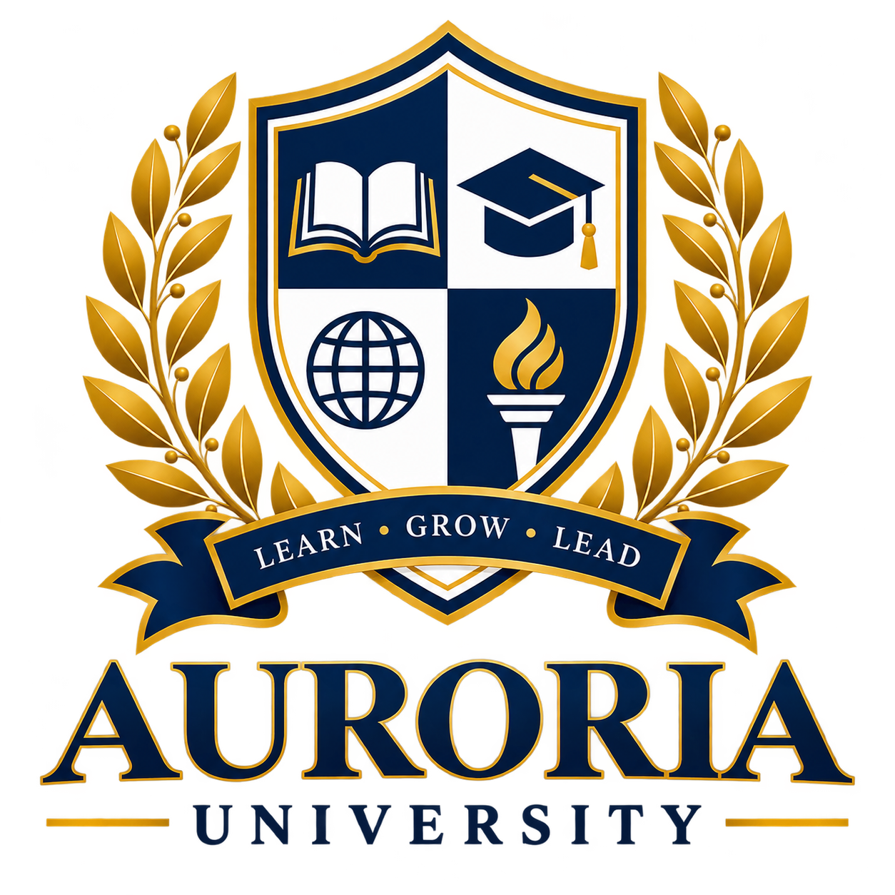
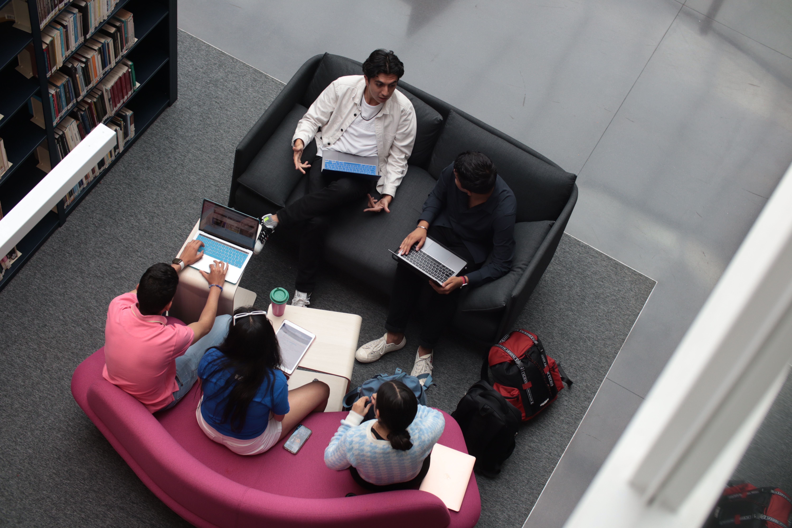

A vision begins
Auroria's story begins with a commitment to the power of education and the value of knowledge.

AURORIA UNIVERSITY Apply NowWe believe education should do more than provide knowledge. It should inspire curiosity, develop character and prepare people to shape a better future.

Established in 1872, Auroria University is presented as an institution founded on the belief that knowledge can open doors, strengthen communities and create lasting change.
From its early commitment to learning to its modern focus on technology, innovation and professional development, Auroria represents the continuing importance of accessible, meaningful education.
Today, the university brings together traditional academic values and a forward-looking approach to learning. Its programmes are designed to encourage independent thinking, practical skills and a willingness to explore new ideas.
Explore our academic programmes →Auroria's founding vision is represented by a simple idea: education should equip people to understand the world, contribute to society and build better futures for themselves and others.
This principle guides the way we present our academic community, our programmes and our commitment to continued learning.
The purpose of learning is not simply to know more, but to think more deeply and make a meaningful difference.The Auroria spirit
A timeline illustrating Auroria's educational journey. Update these milestones with verified institutional history when available.
Auroria's story begins with a commitment to the power of education and the value of knowledge.
The university's developing identity centres on learning, discipline and intellectual growth.
A growing range of academic disciplines reflects the changing needs of students and society.
Modern learning connects academic foundations with technology, practical skills and innovation.
To provide a supportive academic environment where students develop knowledge, practical abilities, integrity and the confidence to contribute positively to society.
To be recognised as a forward-looking university that encourages innovation, lifelong learning and responsible leadership in an evolving world.
Our values shape the learning experience we aim to provide and the community we seek to build.
We encourage high standards, continuous improvement and a commitment to doing meaningful work well.
We value honesty, accountability, respect and responsible academic conduct.
We welcome fresh ideas, creative problem-solving and thoughtful use of technology.
We believe education becomes stronger through cooperation, inclusion and shared responsibility.
Education should prepare students for more than examinations. Our academic approach focuses on understanding concepts, asking questions and applying knowledge to real-world challenges.
Build confidence through essential subject knowledge.
Connect classroom learning with useful skills.
Develop the ability to adapt, question and keep learning.

Discover the broad areas of study represented in Auroria University's academic offering.
Software, data, networks and emerging technology.
Design, systems and practical problem-solving.
Discovering how the natural world works.
Management, entrepreneurship and organisations.
Knowledge that supports health and wellbeing.
People, culture, communication and society.
University life is also about developing confidence, building relationships and discovering new perspectives. Learning alongside others helps students practise collaboration, communication and mutual respect.
We believe a positive academic community should give students room to ask questions, share ideas and work towards common goals.
As education continues to evolve, Auroria's guiding ambition remains to help learners build the knowledge, adaptability and confidence needed for tomorrow.
Explore our academic programmes and discover the possibilities that learning can open for you.